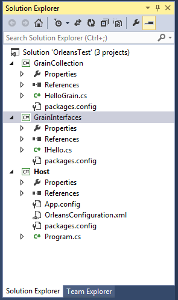
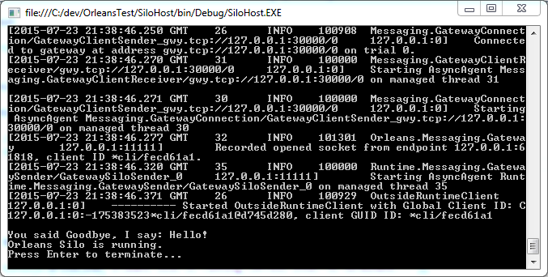

Minimal Orleans Application
This tutorial provides step by step instructions for creating a basic functioning Orleans application. It is designed to be self-contained and minimalistic, with the following traits.
- It does not need the SDK or Extension to be installed, and relies on the Nuget packages only.
- Tested in both Visual Studio 2013 and 2015 using Orleans 1.2.0.
- Has no reliance on SQL or Azure
Keep in mind, this is only a tutorial and lacks appropriate error handling and other goodies that would be useful for a production environment. However, it should help the reader get a real hands-on for all the different facets of Orleans and allow them to focus their continued learning on the parts most relevant to them.
You can find the final source code in Samples\Tutorial.Minimal folder (see latest version online).
Project Setup
For this tutorial we’re going to need to create 3 projects. A Library that contains the interfaces (Communication interfaces), a library that contains the implementation (called Grains), and a simple console application that will Host our Silo. For further understanding of this terminology please see the document Getting Started with Orleans.
The Solution will eventually look like this. (Missing files will be added in sections below)

Within Visual Studio
- Create a blank solution called OrleansTest
- Create a New Console Application called Host
- Create a New class library called GrainInterfaces
- Create a New class library called GrainCollection
We use just the default project types in c#.
Delete the Extras
- Delete Class1.cs from GrainCollection
- Delete Class1.cs from GrainInterfaces
Add the following References
- GrainCollection references GrainInterfaces
- Host references GrainInterfaces
- Host references GrainCollection
Adding Orleans
Orleans is available via Nuget. The primary goodness is in Microsoft.Orleans.Core but we will be including packages that provide additional functionality. Specifically, we will be using Template packages, which provide the autocode generation for us our Grains and Interfaces, and the Runtime which is used for hosting.
With Nuget
- Add Microsoft.Orleans.Templates.Interfaces to GrainInterfaces
- Add Microsoft.Orleans.Templates.Grains to GrainCollection
- Add Microsoft.Orleans.OrleansRuntime to Host
Creating our Grain Interface
In GrainInterfaces create an interface IHello.cs
public interface IHello : Orleans.IGrainWithIntegerKey
{
Task<string> SayHello(string msg);
}
Creating our Implementation
In GrainCollection create a class HelloGrain.cs
class HelloGrain : Orleans.Grain, IHello
{
public Task<string> SayHello(string msg)
{
return Task.FromResult(string.Format("You said {0}, I say: Hello!", msg));
}
}
Host
The host requires the most amount of attention to get Orleans up and running. Throughout future tutorials, much of this will change, or go away (Orleans comes with a nice precanned SiloHost and the Extension provides a template that simplifies this).
However this small implementation should demonstrate the basics of getting started.
Host – App.Config
Change App.config enable the recommended server style garbage collection
<?xml version="1.0" encoding="utf-8" ?>
<configuration>
<runtime>
<gcServer enabled="true"/>
</runtime>
</configuration>
Host – OrleansConfiguration.xml
Within the Host project, add an XML file that will be used for cluster configuration called OrleansConfiguration.xml
Make sure it is set to Copy to Output directory:
<?xml version="1.0" encoding="utf-8"?>
<OrleansConfiguration xmlns="urn:orleans">
<Globals>
<SeedNode Address="localhost" Port="11111" />
</Globals>
<Defaults>
<Networking Address="localhost" Port="11111" />
<ProxyingGateway Address="localhost" Port="30000" />
</Defaults>
</OrleansConfiguration>
It is possible to configure this within the code, but it is fairly temperamental.
Host – Program.cs
Program.cs is our most length code block. We are attempting to accomplish a number of objectives
- Initialize Orleans in its own AppDomain
- Run a trivial example (DoSomeClientWork)
- Wait for the user to press enter
- Shutdown gracefully
The Orleans samples come with a very nice class called HostWrapper, which abstracts some of the boiler plate within this example. We're going to do this by hand, but for a more robust implementation, it is worth exploring.
using Orleans.Runtime.Host;
using Orleans;
using System.Net;
class Program
{
static SiloHost siloHost;
static void Main(string[] args)
{
// Orleans should run in its own AppDomain, we set it up like this
AppDomain hostDomain = AppDomain.CreateDomain("OrleansHost", null,
new AppDomainSetup()
{
AppDomainInitializer = InitSilo
});
DoSomeClientWork();
Console.WriteLine("Orleans Silo is running.\nPress Enter to terminate...");
Console.ReadLine();
// We do a clean shutdown in the other AppDomain
hostDomain.DoCallBack(ShutdownSilo);
}
static void DoSomeClientWork()
{
// Orleans comes with a rich XML and programmatic configuration. Here we're just going to set up with basic programmatic config
var config = Orleans.Runtime.Configuration.ClientConfiguration.LocalhostSilo(30000);
GrainClient.Initialize(config);
var friend = GrainClient.GrainFactory.GetGrain<IHello>(0);
var result = friend.SayHello("Goodbye").Result;
Console.WriteLine(result);
}
static void InitSilo(string[] args)
{
siloHost = new SiloHost(System.Net.Dns.GetHostName());
// The Cluster config is quirky and weird to configure in code, so we're going to use a config file
siloHost.ConfigFileName = "OrleansConfiguration.xml";
siloHost.InitializeOrleansSilo();
var startedok = siloHost.StartOrleansSilo();
if (!startedok)
throw new SystemException(String.Format("Failed to start Orleans silo '{0}' as a {1} node", siloHost.Name, siloHost.Type));
}
static void ShutdownSilo()
{
if (siloHost != null)
{
siloHost.Dispose();
GC.SuppressFinalize(siloHost);
siloHost = null;
}
}
}
Running the application
At this point we should be able to run Host. A console should appear with a large amount of logging text, at the end it should look like this

Within the appropriate bin directory (Debug/Release) there will be a number of log files showing this information as well. The amount and method of logging is configurable.